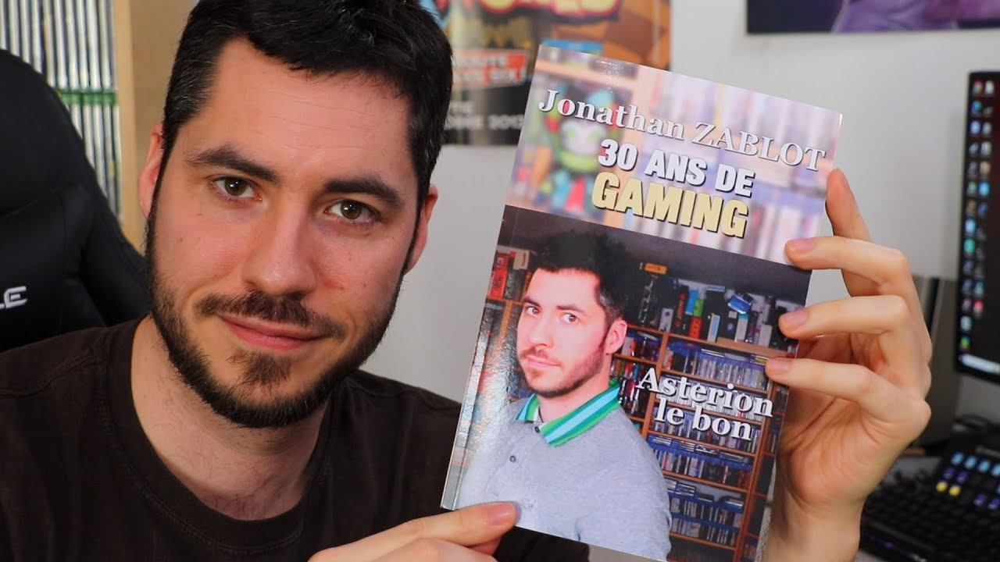
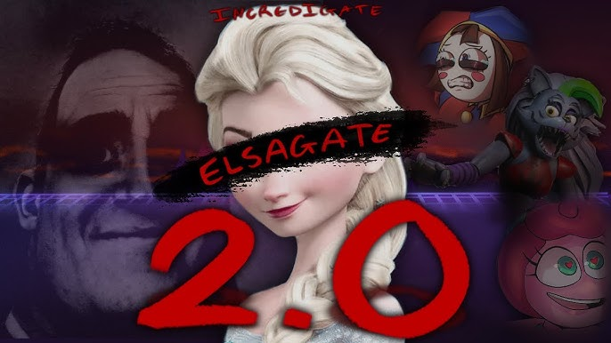

Derniers dramas

La Révélation de Pierre Chabrier : Analyse d'une Controverse YouTube
Dans cet article, nous plongeons dans la récente controverse impliquant Pierre Chabrier, un youtubeur automobile, à travers ses révélations sur la fin de son partenariat avec Sylvain, ainsi que les répercussions de leurs interactions publiques
Asterion : Le Prédateur des Réseaux Sociaux
Plongée dans l'univers troublant d'Asterion, un youtubeur controversé, entre comportements inappropriés, accusations graves et la toxicité de sa communauté

Michou et le Controverse de son Jeu de Société
Le célèbre YouTuber Michou se retrouve au cœur d'une controverse majeure après la sortie de son jeu de société "Qui sera le menteur", suscitant des questions sur la responsabilité des influenceurs envers un public jeune
Projet Humoristique au Bord du Gouffre
Plongez dans l'incroyable retournement de situation de l'équipe de '' Pire Stagiaire '', confrontée à une trahison inattendue. Entre déception et résilience, découvrez comment la communauté s'est unie face à l'adversité et a trouvé des leçons dans l'échec
Les dérives d'Elsa Gate sur YouTube
Découvrez comment des contenus inappropriés pour les enfants, associés au phénomène captivant d'Elsa Gate, compromettent la sécurité numérique des jeunes sur YouTube

Controverses autour d'Unchained sur YouTube
Unchained, un créateur de contenu populaire, est au cœur de plusieurs polémiques liées au plagiat et à un contenu jugé inapproprié pour son jeune public. Cet article explore les témoignages et les enjeux éthiques de ces accusations
Scandale autour du YouTuber Talcado et ses pratiques controversées
Le tumulte autour de Talcado révèle des accusations de plagiat et d'exploitation, suscitant l'indignation dans la communauté des créateurs

Une pétition a été lancée pour mettre fin à Pyrorca
Un utilisateur à lancé une pétition pour mettre Pyrorca en prison
Derniers plagiats
AUCUNE PUBLICATION
Derniers dossiers
BIENTÔT DISPONIBLE
Chaînes critiques

Theo Malini
Description inconnue

BLZstarss
Ici on parle de génies, de gens qui ont fait de la merde ou d'histoires folles de youtubeurs

Kezen
Retrouvez toute l'actualité YouTube ici !
Inconnue
Description inconnue
Régulièrement mis à jour